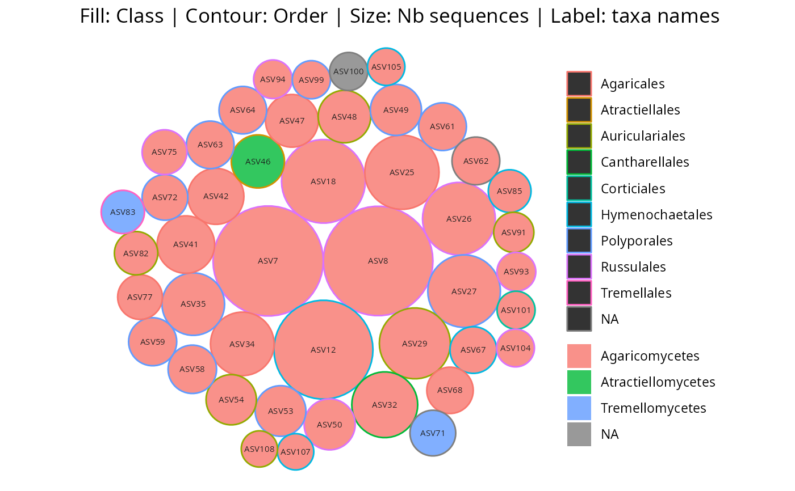
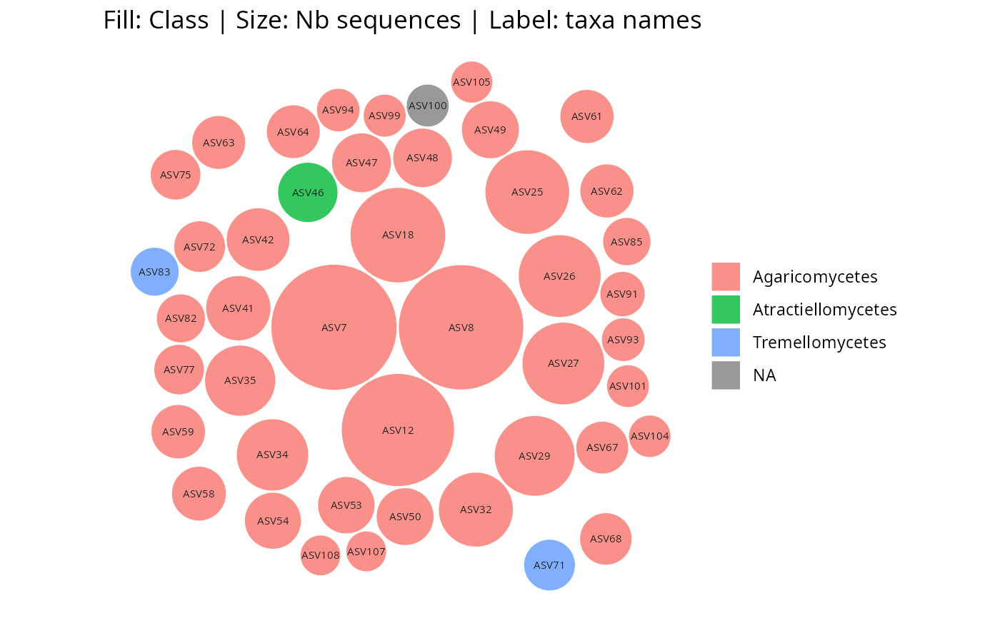
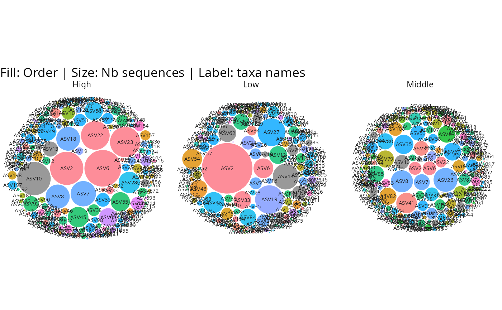
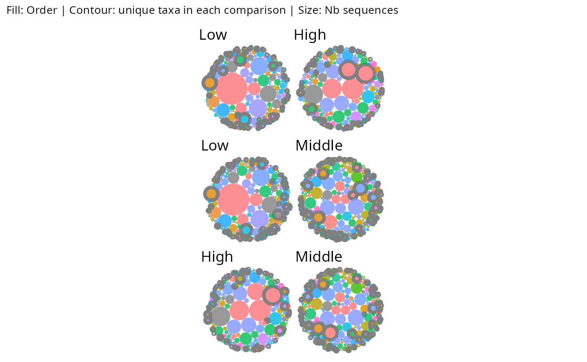
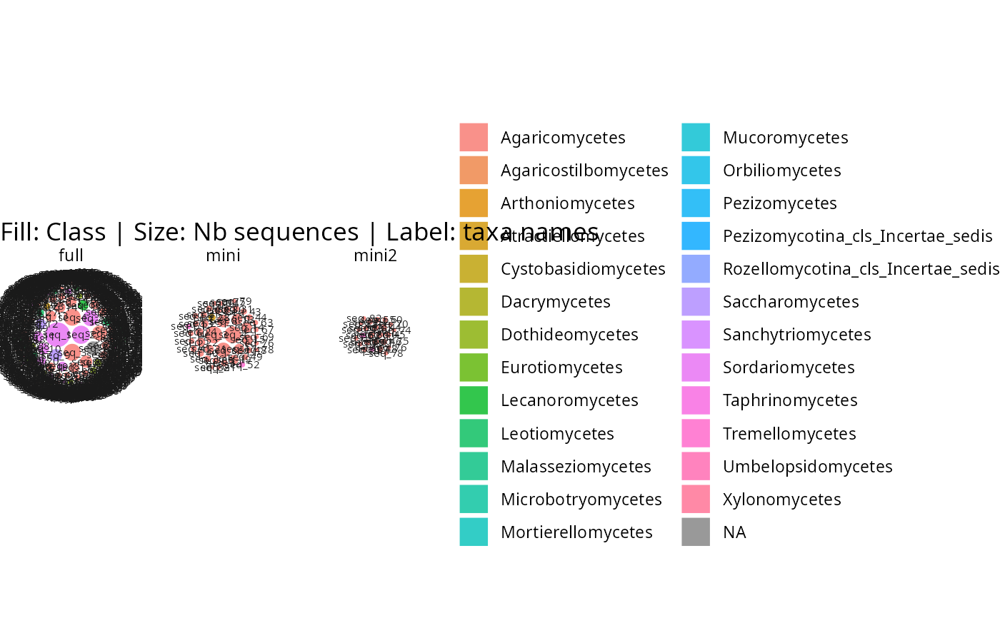
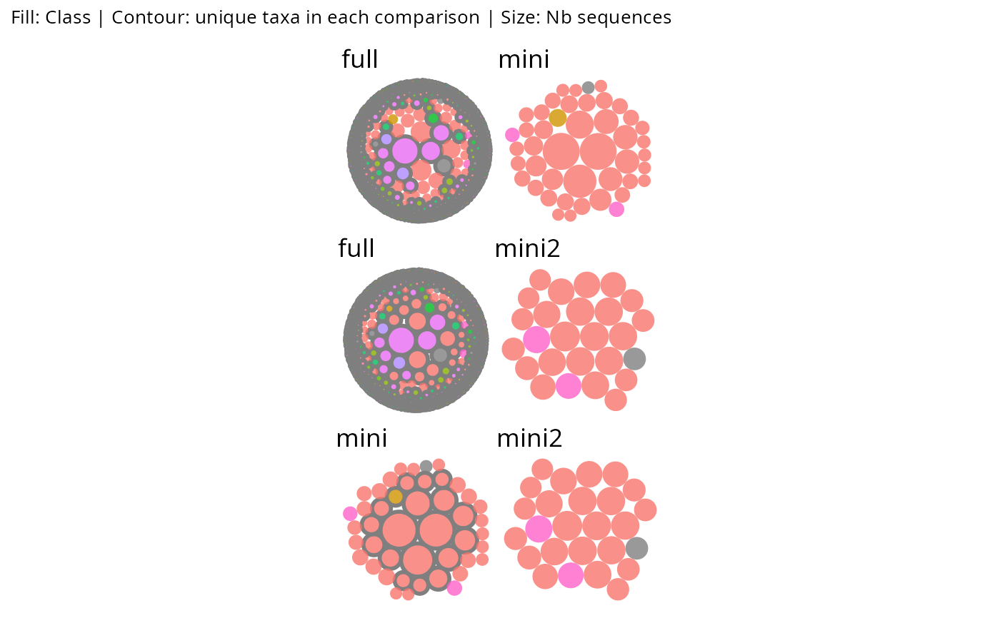

Circle-packed bubble plot of a phyloseq object using ggplot2
Source:R/gg_bubbles_pq.R
gg_bubbles_pq.Rd
Creates a static circle-packed bubble plot of taxa abundances from a phyloseq object using ggplot2. Circles can be packed in a circular layout (tight, default) or a square layout. Optionally facets the plot by a sample data variable, producing one bubble chart per level.
When a list_phyloseq is passed as physeq, it is first merged into a
single phyloseq object using merge_lpq() (each original phyloseq becomes
one sample) and the plot is automatically faceted by source_name.
When diff_contour = TRUE together with facet_by (or a list_phyloseq
input), all pairwise comparisons between facet levels are shown side by
side using patchwork. For each pair (A vs B), taxa unique to A are
highlighted with A's color and taxa unique to B with B's color. Shared
taxa receive a transparent contour. This makes it easy to spot which taxa
are exclusive to each group in every pairwise comparison.
Usage
gg_bubbles_pq(
physeq,
rank_label = "Taxa",
rank_color = "Family",
rank_contour = NULL,
layout = c("circle", "square"),
facet_by = NULL,
log1ptransform = FALSE,
min_nb_seq = 0,
label_size = 2,
label_color = "grey10",
show_labels = TRUE,
border_color = "white",
border_width = 0.5,
alpha = 0.8,
npoints = 50,
ncol_facet = NULL,
return_dataframe = FALSE,
diff_contour = FALSE,
diff_contour_colors = c("#E41A1C", "#377EB8", "#4DAF4A", "#984EA3"),
diff_border_width = 1.5,
show_title = TRUE,
match_by = c("refseq", "names")
)Arguments
- physeq
(required) A
phyloseq-classobject obtained using thephyloseqpackage.- rank_label
(character, default "Taxa") The name of the column in the
@tax_tableslot to label the circles. If set to "Taxa", the taxa names are used.- rank_color
(character, default "Family") The name of the column in the
@tax_tableslot to color the circles.- rank_contour
(character, default NULL) The name of a column in the
@tax_tableslot to color the circle borders (contours). When NULL, the fixedborder_coloris used for all borders. Ignored whendiff_contour = TRUE.- layout
(character, default "circle") The packing layout.
"circle"produces a tight circular packing."square"constrains circles inside a square boundary, with large circles placed centrally.- facet_by
(character, default NULL) A column name from
@sam_datato facet the plot. When set, one bubble chart is produced per level of the variable, with taxa abundances computed within each level. Whenphyseqis a list_phyloseq, this is automatically set to"source_name".- log1ptransform
(logical, default FALSE) If TRUE, the number of sequences is log1p transformed before computing circle sizes.
- min_nb_seq
(integer, default 0) Minimum number of sequences to filter out taxa with low abundance.
- label_size
(numeric, default 2) Font size for the labels inside circles.
- label_color
(character, default "grey10") Color for the label text.
- show_labels
(logical, default TRUE) If TRUE, labels are displayed inside circles. Only circles large enough to fit text are labeled.
- border_color
(character, default "white") Color for circle borders.
- border_width
(numeric, default 0.5) Width of circle borders.
- alpha
(numeric, default 0.8) Transparency of circle fill.
- npoints
(integer, default 50) Number of vertices used to approximate each circle polygon. Higher values produce smoother circles.
- ncol_facet
(integer, default NULL) Number of columns for facet layout. Passed to
ggplot2::facet_wrap().- return_dataframe
(logical, default FALSE) If TRUE, the plot is not returned, but the resulting dataframe to plot is returned. Ignored when
diff_contour = TRUE.- diff_contour
(logical, default FALSE) If TRUE and
facet_byis set (orphyseqis a list_phyloseq), produces pairwise comparison panels for all pairs of facet levels using patchwork. For each pair, taxa unique to each side are highlighted with a distinct contour color fromdiff_contour_colors. Shared taxa get a transparent contour. When TRUE,rank_contouris ignored.- diff_contour_colors
(character vector, default
c("#E41A1C", "#377EB8", "#4DAF4A", "#984EA3")) Border colors for taxa unique to each facet level indiff_contourmode. Recycled if shorter than the number of facet levels. Each level gets a distinct color so unique taxa from different groups are visually distinguishable.- diff_border_width
(numeric, default 1.5) Border width used in
diff_contourmode.- show_title
(logical, default TRUE) If TRUE, adds an informative title describing what the fill color, contour color, circle size, and labels represent.
- match_by
(character, default
"refseq") How to match taxa whenphyseqis a list_phyloseq. Passed tomerge_lpq(). One of"refseq"(match by reference sequences) or"names"(match by taxa names).
Value
A ggplot2 object, a patchwork object (when diff_contour = TRUE),
or a data.frame if return_dataframe = TRUE.
Examples
gg_bubbles_pq(physeq = data_fungi_mini, rank_color = "Class")
 gg_bubbles_pq(
physeq = data_fungi_mini, rank_color = "Class",
rank_contour = "Order"
)
gg_bubbles_pq(
physeq = data_fungi_mini, rank_color = "Class",
rank_contour = "Order"
)

gg_bubbles_pq(
physeq = data_fungi_mini, rank_color = "Class",
layout = "square"
)

# Faceted by sample variable
gg_bubbles_pq(
physeq = data_fungi, rank_color = "Order",
facet_by = "Height", min_nb_seq = 100
) + no_legend()

# Pairwise diff_contour on a faceted phyloseq
gg_bubbles_pq(
physeq = data_fungi, rank_color = "Order",
facet_by = "Height", min_nb_seq = 100,
diff_contour = TRUE, show_labels = FALSE
) & no_legend()

# list_phyloseq: automatically merged and faceted
mini2 <- subset_taxa_pq(data_fungi_mini, taxa_sums(data_fungi_mini) < 10000)
#> Cleaning suppress 0 taxa ( ) and 40 sample(s) ( A12-007-B_S2_MERGED.fastq.gz / AD30-ABMX-M_S12_MERGED.fastq.gz / BG7-010-H_S31_MERGED.fastq.gz / BH9-021_S33_MERGED.fastq.gz / BJ8-ABM-003_S35_MERGED.fastq.gz / BL7-006-H_S37_MERGED.fastq.gz / BO8-005_S42_MERGED.fastq.gz / BP12-025-B_S46_MERGED.fastq.gz / BQ3-019_S48_MERGED.fastq.gz / BQ4-018-H_S50_MERGED.fastq.gz / BQ9ABM-002_S52_MERGED.fastq.gz / BR8-005_S53_MERGED.fastq.gz / BT7-006_S56_MERGED.fastq.gz / CB8-019-B_S69_MERGED.fastq.gz / CB8-019-M_S71_MERGED.fastq.gz / D61-010-B_S82_MERGED.fastq.gz / D9-027-H_S84_MERGED.fastq.gz / D9-027-M_S85_MERGED.fastq.gz / DS1-ABM002-B_S91_MERGED.fastq.gz / DY5-004-B_S96_MERGED.fastq.gz / DZ6-ABM-001_S99_MERGED.fastq.gz / F7-015-M_S106_MERGED.fastq.gz / H10-018-M_S110_MERGED.fastq.gz / H24-NVABM1-H_S111_MERGED.fastq.gz / J18-004-B_S114_MERGED.fastq.gz / J18-004-M_S116_MERGED.fastq.gz / L19X-B_S119_MERGED.fastq.gz / L23-002-M_S124_MERGED.fastq.gz / NVABM-0397_S138_MERGED.fastq.gz / O24-003-B_S145_MERGED.fastq.gz / O26-004-B_S148_MERGED.fastq.gz / O27-012_S151_MERGED.fastq.gz / P27-015-M_S154_MERGED.fastq.gz / P27-ABM001_S155_MERGED.fastq.gz / Q27-ABM003-B_S156_MERGED.fastq.gz / W26-001-B_S165_MERGED.fastq.gz / X24-010_S173_MERGED.fastq.gz / X29-004-B_S174_MERGED.fastq.gz / Y28-002-B_S178_MERGED.fastq.gz / Z29-001-H_S185_MERGED.fastq.gz ).
#> Number of non-matching ASV 0
#> Number of matching ASV 45
#> Number of filtered-out ASV 19
#> Number of kept ASV 26
#> Number of kept samples 97
lpq <- list_phyloseq(
list(full = data_fungi, mini = data_fungi_mini, mini2 = mini2),
)
#> ℹ Building summary table for 3 phyloseq objects...
#> ℹ Computing comparison characteristics...
#> ℹ Checking sample and taxa overlap...
#> ℹ Detected comparison type: NESTED_ROBUSTNESS
#> ℹ 97 common samples, 26 common taxa
#> ✔ list_phyloseq created (NESTED_ROBUSTNESS)
gg_bubbles_pq(lpq, rank_color = "Class")

# list_phyloseq with diff_contour: pairwise panels
gg_bubbles_pq(lpq, rank_color = "Class", diff_contour = TRUE,
show_labels = FALSE, diff_border_width = 1) & no_legend()
